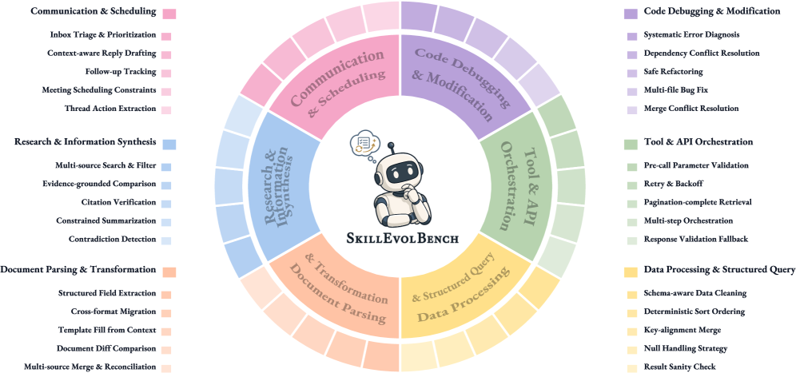
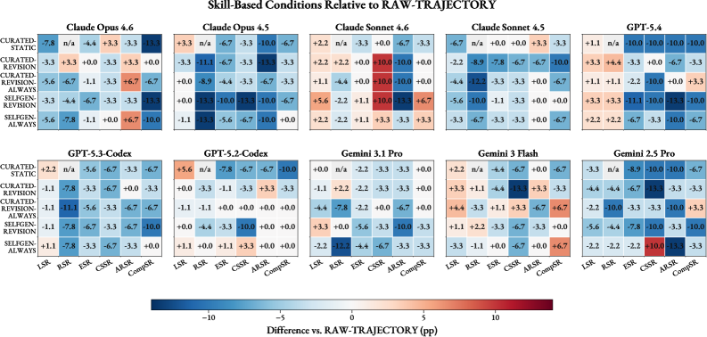
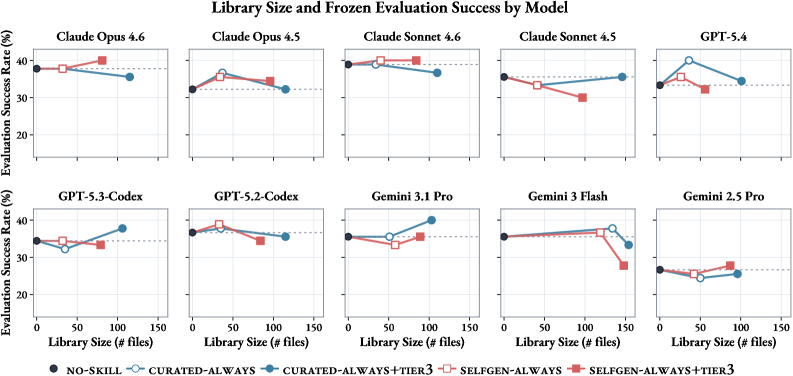
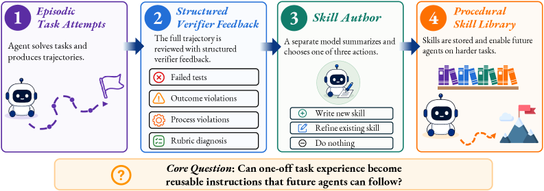

轨迹不是技能
一个 episodic trajectory 记录了“这一次发生了什么”：读了哪些文件、运行了哪些命令、哪里失败、怎样修复、最终 verifier 如何反馈。 这些信息很有价值，但它混有 fixture-specific 细节、失败假设和偶然上下文。
一个 procedural skill 应该回答另一个问题：未来遇到同类任务时，什么时候触发、按什么步骤做、检查什么、避开什么捷径。
这篇论文问的不是 agent 会不会调用 skill，而是更关键的一步： 真实任务留下的工具调用、代码修改、失败尝试、verifier feedback， 能否被压缩成未来 agent 在上下文迁移、诱导捷径和多技能组合中仍可复用的程序性技能。
轨迹复用、反思记忆、workflow memory 都说明旧经验有用；agent skills 说明程序性指导有用。 SkillEvolBench 关心中间缺失的一步：一次性经验能否变成 durable procedural knowledge。
一个 episodic trajectory 记录了“这一次发生了什么”：读了哪些文件、运行了哪些命令、哪里失败、怎样修复、最终 verifier 如何反馈。 这些信息很有价值，但它混有 fixture-specific 细节、失败假设和偶然上下文。
一个 procedural skill 应该回答另一个问题：未来遇到同类任务时，什么时候触发、按什么步骤做、检查什么、避开什么捷径。
SWE-bench、WebArena、OSWorld 等更偏“能不能完成任务”；SkillsBench 证明 curated skills 有用， 但 self-generated setting 更接近 cold-start，尚未回答 agent 能不能从真实执行和 verifier feedback 中沉淀 skill。
SkillEvolBench 的贡献，是把每次 acquisition attempt 变成一次抽象机会，再把 library 冻结后放到 deployment 任务上检验。
判断标准很严格：如果 skill 只提升 acquisition 或 replay，它可能只是本地补丁；只有 frozen deployment 的 context-shift、adversarial、composition 也提升，才更接近 reusable skill。
每个环境包含 5 个 recurring procedural families。每个 family 包含 6 个 role-conditioned tasks： 前 3 个暴露经验，后 3 个冻结评测。

| 环境 | 五个 skill family | 它主要测什么 |
|---|---|---|
| E1 Code | 系统错误诊断、依赖冲突、安全重构、多文件 bug、merge conflict | 代码修改中的根因追踪、行为保持、跨文件协调和冲突合并。 |
| E2 Tool/API | 参数校验、重试退避、分页拉取、多步编排、响应校验 fallback | API discipline、状态依赖和接口边界条件。 |
| E3 Data | schema 检查、类型归一化、join key 对齐、null-safe 聚合、结果 sanity check | 表格处理里的前置检查、清洗和结果验证。 |
| E4 Docs | 字段抽取、格式迁移、模板填充、文档 diff、多源合并 | 结构化转换和源目标一致性验证。 |
| E5 Research | 多源筛选、证据比较、引用核验、约束摘要、矛盾检测 | 信息综合中的 evidence grounding 和 source fidelity。 |
| E6 Communication | 邮件 triage、上下文回复、follow-up 跟踪、会议排期、action item 抽取 | 开放式沟通任务里的多约束执行和上下文保真。 |
每个 environment 是一个独立 lifelong episode。skills 可以在同环境内累积，但切换环境时 reset，避免跨环境泄漏。
Self-generated 从空 skill 开始；curated-start 从 gap-exposed curated skill 开始；zero-shot 只根据 metadata 写 fixed skill。
agent 依次处理 canonical、enriched、variant。每次尝试后，系统记录指令、文件访问、工具调用、命令、编辑、输出、测试和最终响应。
rich compaction 给 Skill Author 使用；rough compaction 给 Raw-Trajectory control 使用。作者特别说明不访问 hidden model state 或 private chain-of-thought。
Skill Author 是 host-side LLM call，与 task-solving agent 分离。它只接收 same-family skills 和 same-family acquisition history。
library 冻结后，agent 只能读取和应用 skills，不能继续修订。deployment 后再 replay 原 acquisition tasks，用来区分 local recovery 与 transfer。
| 条件 | 含义 | 它排除什么混淆 |
|---|---|---|
| No-Skill | 没有 persistent memory 或 skill library。 | base agent capability。 |
| Raw-Trajectory | 检索同 family acquisition 轨迹，不生成 skill。 | 直接 episodic reuse 是否已经足够。 |
| Curated-Static / Revision / Always | 从 gap-exposed curated skill 开始，静态或按策略修订。 | 人类初始程序知识和经验修订的贡献。 |
| SelfGen-ZeroShot / Revision / Always | 空起点或 metadata 起点，由 agent 从轨迹诱导 skill。 | agent 自己从经验形成 skill 的能力。 |
| Always+Tier3 | 强制写入或更新 scripts/、references/、assets/。 |
library 容量是否是瓶颈。 |
我从项目页内嵌 leaderboard 解析出十个模型的平均指标。结论很清楚： always-update 略好，但绝大多数 skill 条件没有形成稳定 deployment 优势。
| 条件 | LSR | RSR | ESR | CSSR | ARSR | CompSR | ESR 变化 |
|---|---|---|---|---|---|---|---|
| No-Skill | 40.1 | - | 34.7 | 38.3 | 43.7 | 22.0 | baseline |
| Curated-Static | 41.8 | - | 32.2 | 38.0 | 39.7 | 19.0 | -2.46 pp |
| Curated-Revision | 41.2 | 46.0 | 34.0 | 38.0 | 41.3 | 22.7 | -0.68 pp |
| Curated-Revision-Always | 40.6 | 41.8 | 35.5 | 41.0 | 40.7 | 24.7 | +0.77 pp |
| SelfGen-ZeroShot | 41.0 | - | 32.1 | 37.0 | 37.7 | 21.7 | -2.57 pp |
| SelfGen-Revision | 41.7 | 44.1 | 32.1 | 37.0 | 38.3 | 21.0 | -2.58 pp |
| SelfGen-Always | 40.8 | 43.1 | 35.1 | 40.7 | 41.0 | 23.7 | +0.44 pp |
acquisition 或 replay 变好不代表 skill 真可复用。论文中多个模型在 LSR/RSR 上涨，但 ESR、CSSR 或 CompSR 下降。
context-shift、adversarial robustness、composition 暴露的是不同 failure mode。单一 success rate 会把 missed invocation、shortcut reliance 和 weak modularity 混在一起。
Opus 4.5、GPT-5.4 等模型更容易从 procedural memory 获益；Gemini 2.5 Pro 在多数 memory variants 下反而受损。
这是论文最刺痛当前 agent memory 方法的结果：如果 skill abstraction 真保留了可复用程序， distilled skills 应该至少不输直接轨迹复用；但实验中不是这样。

我的判断：这不是“总结写得不够长”的问题，而是 selective procedural abstraction 的问题。 当前 agent 不稳定地知道哪些 execution details 是未来程序的一部分，哪些只是当前 episode 的噪声。

| 现象 | 例子 | 解释 |
|---|---|---|
| 资源文件有时有用 | Claude Opus 4.6 在 SelfGen-Always+Tier3 中 ESR 从 37.8% 到 40.0%。 | 某些脚本、模板、参考确实能保存 compact SKILL.md 放不下的稳定程序。 |
| 容量也会伤害 | Gemini 3 Flash 的 SelfGen-Always+Tier3 ESR 从 No-Skill 35.6% 掉到 27.8%。 | 额外资源可能变成 stale context、过拟合 validator 或弱触发文件，增加检索和判断负担。 |
| Always update 不单调 | Self-generated Always 平均略好，但也会降低部分模型或指标。 | 更多写入提高 coverage，也增加 episode-specific drift。 |
这篇论文不是给出一个最终算法，而是给 skill 系统设计提供了很明确的失败清单。
更合理的架构是双层记忆：skill library 保存稳定 procedure，episodic trace memory 保存具体执行证据。 未来 agent 用 skill 做骨架，用 trace 还原局部上下文。
比起“validate input before using it”，更有用的是“merge 前检查 dtype、case、unmatched keys； merge 后 assert row count 和 critical NaN”。技能的核心是可执行检查点。
每次任务都可以提取 candidate lesson，但只有 stable、repeated、verifier-backed、future-triggerable 的内容才应该进入 skill body。
真实系统需要 skill retirement、duplicate merge、trigger collision check、usage audit、stale resource detection 和 skill-level regression tests。
一个实用 checklist：写清触发条件；写具体流程；保留失败线索；写验证方法；区分稳定程序和局部细节； Tier-3 文件必须被 SKILL.md 明确引用；修订后问它是否能帮助未来不同上下文的任务。
SkillEvolBench 最好的地方，是它用 Raw-Trajectory control 逼所有 skill 方法面对一个朴素问题： 你提炼出的技能，为什么比原始经验更好？如果答案说不清，skill 很可能只是看起来更干净的 lossy compression。
当前 agent 的核心瓶颈不是“不会总结”，而是“不知道哪些执行细节是未来程序的一部分”。 很多命令、schema 检查、异常路径、失败尝试和 verifier 诊断，在摘要时看像局部噪声， 但在 deployment 的 context shift 或 adversarial task 里恰好是关键线索。
所以我会把这篇论文当作 agent skill system 的评测框架，而不是只当 benchmark 榜单。 后续真正有价值的方向，是 trace-to-skill loss analysis、skill trigger evaluation、skill regression tests 和 hybrid skill+trace retrieval。
本报告以 arXiv PDF/HTML、项目主页、Hugging Face Paper API 和 Hugging Face Dataset 为主证据。 本地额外下载了 dataset parquet，核验 30 个 skills 与 180 个 tasks 的结构。
skillevolbench.github.io 页面和内嵌 leaderboard 数据；Paper 链接可用，Code/Data 按钮当前在页面 HTML 中仍是占位 #。
skillevolbench/skillevolbench 可访问，包含 skills 与 tasks 两个 config；本地核验 skills=30、tasks=180。
